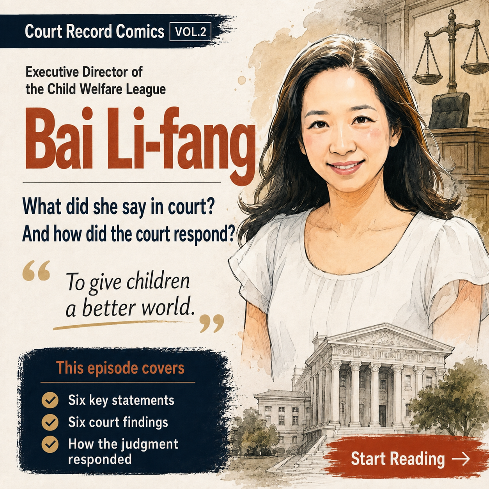
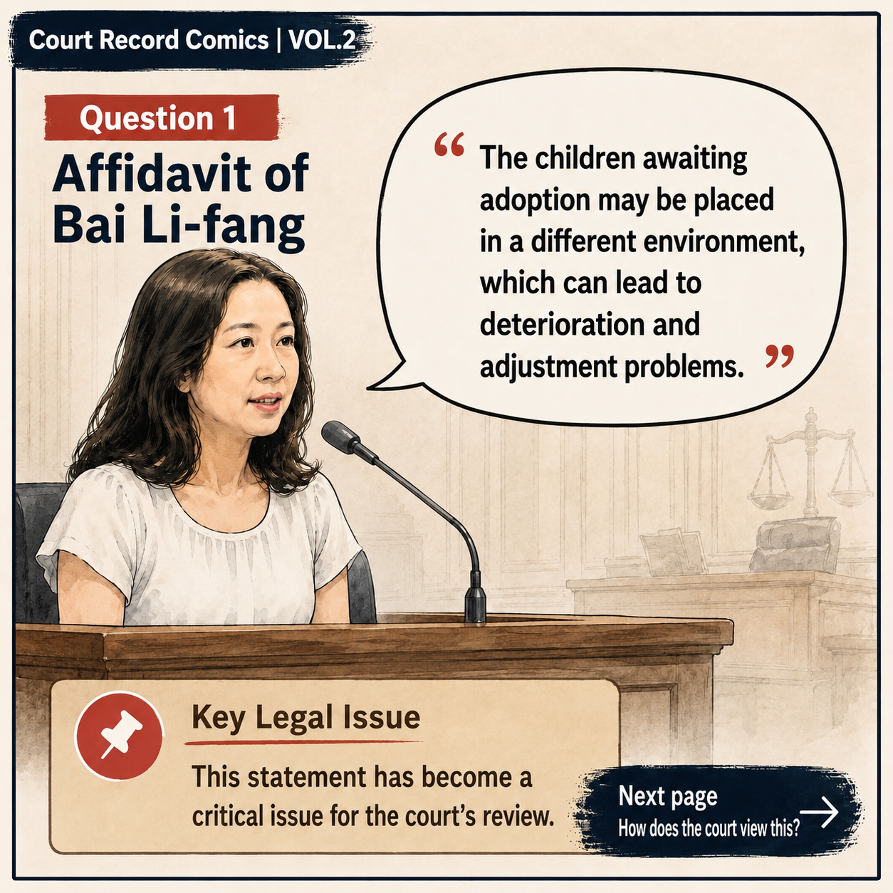
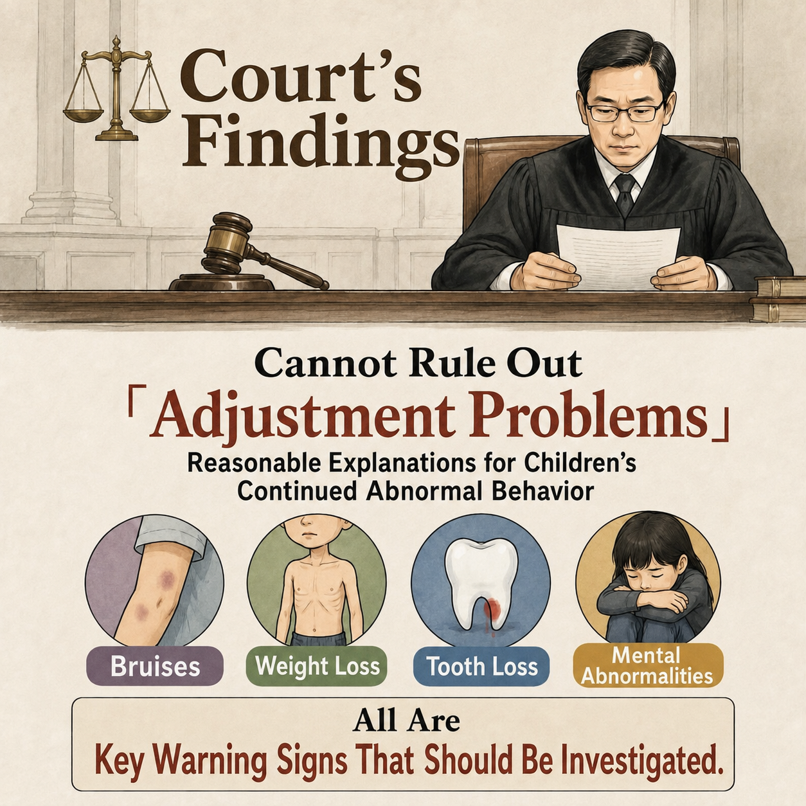
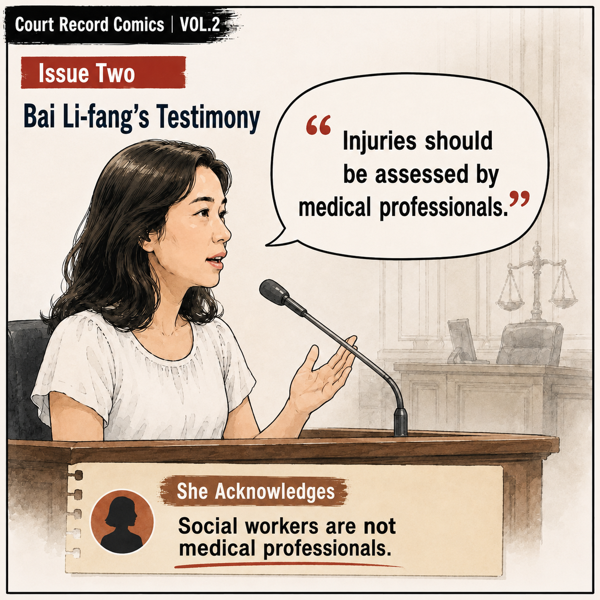
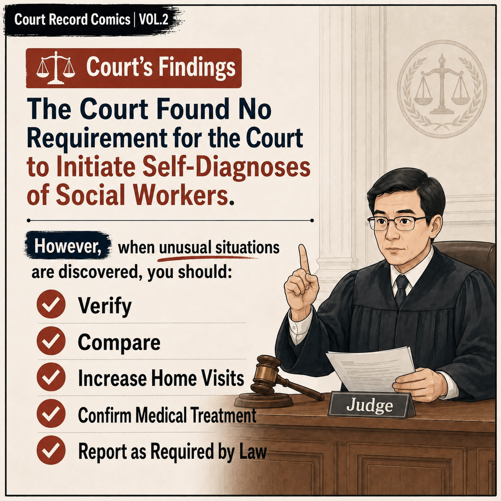
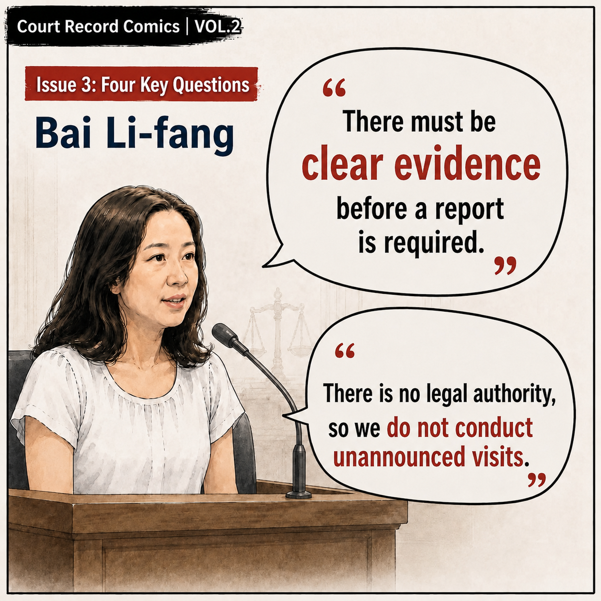
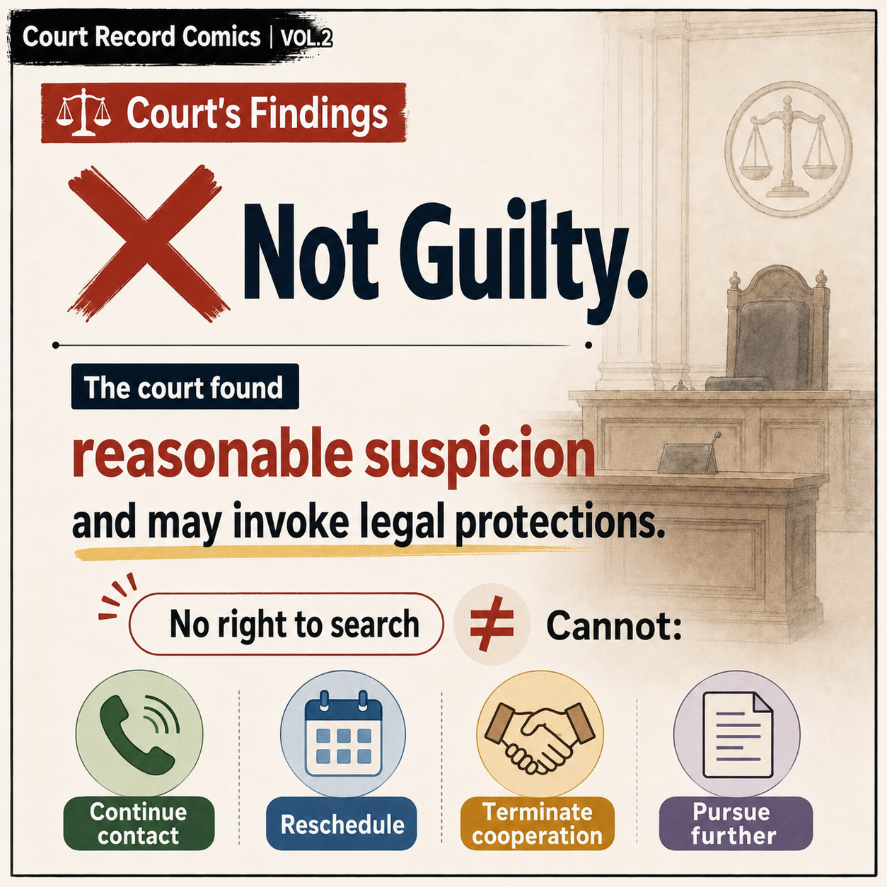
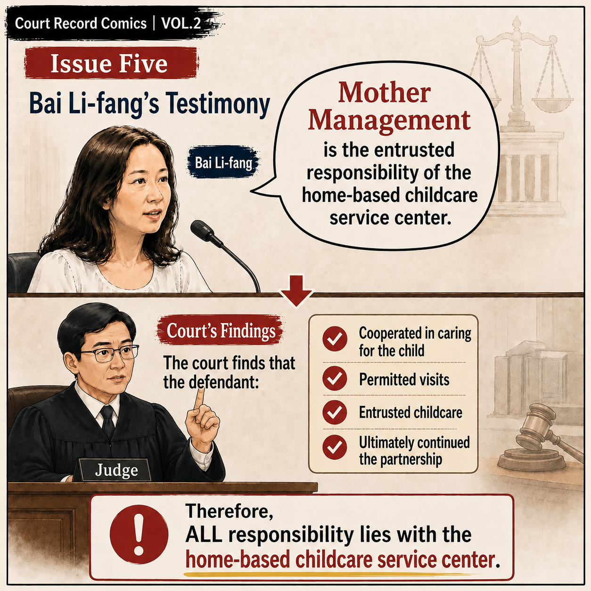
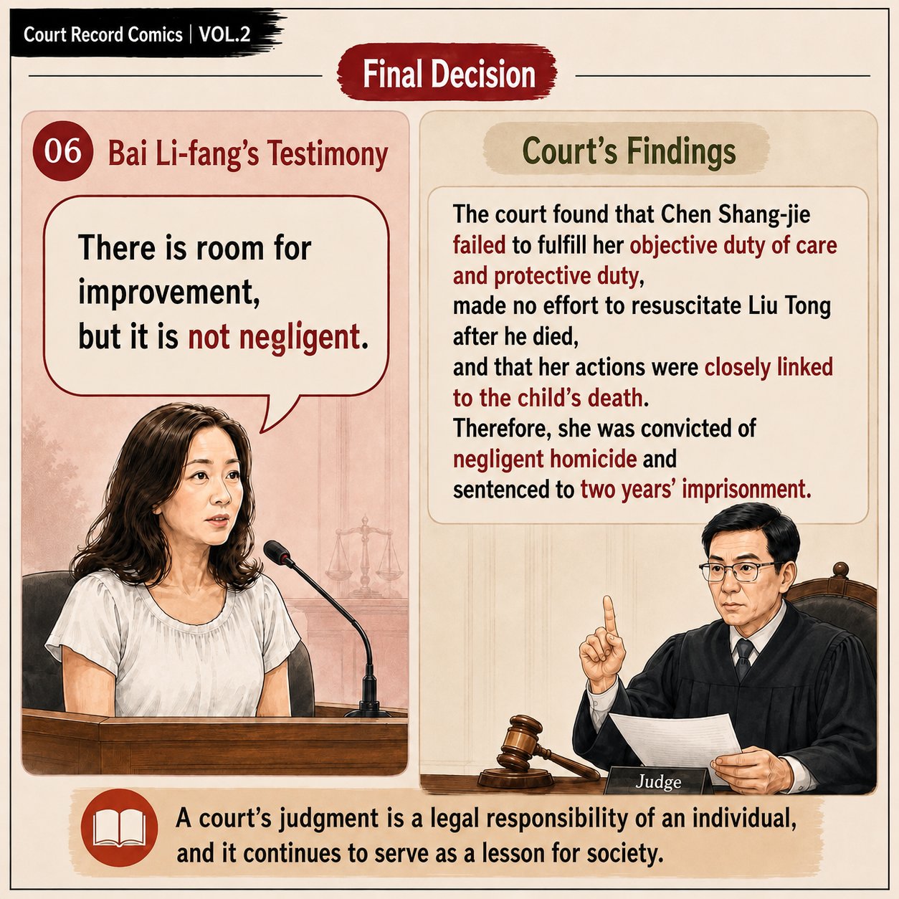

VOL.2P.1
Court Record Comics VOL.2｜Page 1

Based on the content of the public trial, Bai Lifang's important testimony, the court's identification of relevant issues, and the core issues in the practical implementation of the child protection system are organized with pictures and texts.
Thanks to Mr. Zhang for providing the first-instance court record of the case of Chen Shangjie, a social worker from the Child Welfare Alliance🙏
Based on the content of the public trial, this article organizes Bai Lifang's important testimony in court in the form of pictures and text, as well as the court's identification of relevant issues. It hopes to help friends who are concerned about the case to have a clearer understanding of the case trial process. Through the content of the trial, we can also think about what else is worthy of inspection and reflection in the system, culture and practical implementation of child protection work.
What was presented in the trial was not only the responsibility of the individual case, but also reflected the possible gap between some practical concepts and the public's expectations for the protection of children. There are indeed many restrictions and pressures in front-line work, but when a child has abnormal warning signs, the most important issue is whether the system is truly implemented and the protection mechanism is activated immediately.
No matter how perfect the social safety net is, if habits, thinking, and trends lead to negative actions during the implementation process, and the proper verification and activation mechanisms are not implemented, no matter how good the system is, it may lose its original functions.
It is hoped that through the compilation of public trial contents, more people will understand the case and think about how to make the child protection system not only exist, but truly implemented.
The comic pictures have been directly embedded in the web page and can be read page by page directly.

P.2
P.3
P.4
P.5
P.6
P.7
P.8
P.9You can go back to the first episode to re-read the trial issues in the workplace records.
← Back to episode 1